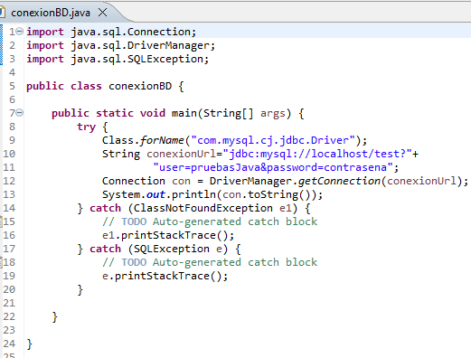

Para acceder a una base de datos y así poder operar con ella, lo primero que hay que hacer es conectarse a dicha base de datos.
En Java, para establecer una conexión con una base de datos podemos utilizar el método getConnection() de la clase DriverManager. Este método recibe como parámetro la URL de JDBC que identifica a la base de datos con la que queremos realizar la conexión.
La ejecución de este método devuelve un objeto Connection que representa la conexión con la base de datos.
Cuando se presenta con una URL específica, DriverManager itera sobre la colección de drivers registrados hasta que uno de ellos reconoce la URL especificada. Si no se encuentra ningún conector adecuado, se lanza una SQLException
Preparar la conexión a la base de datos es un paso importante que tener en cuenta. Para realizar la conexión, es necesario utilizar la clase Connection. Este será el intermediario que conectará nuestra aplicación y la base de datos. Si estamos utilizando otro entorno para realizar la conexión, se necesitará el nombre del host y el puerto. Para construir la URL, seguiremos esta estructura:
String url = "jdbc:mysql://hostname:port/database";String url = "jdbc:mysql://localhost/database";
String usuario= "alumno";
String contrasena = "password"
Connection conn = DriverManager.getConnection(url, usuario, contrasena);Para realizar la conexión se utiliza DriverManager y se llamará al método getConnection(), que devolverá el objeto Connection con todos los datos de la conexión realizada en BBDD.
Veamos un ejemplo para conectarnos a una base de datos MySQL:
